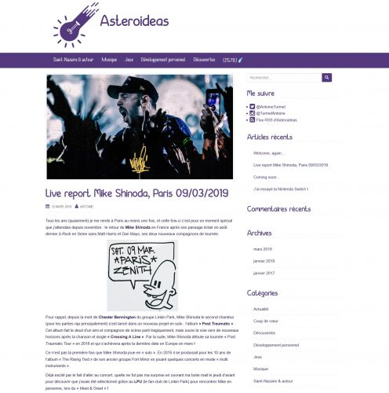

29 mars 2019
Lancement d'Asteroideas
Hello, pour faire suite à mon précédent article ici, voici Asteroideas, mon nouveau blog !

Je vous invite à y faire un tour, car les prochains articles seront dessus ! Un autre blog est prévu dans l'année pour tout ce qui est technique, je pense faire une annonce aussi ici, mais dans le doute, suivez Asteroideas et n'hésitez pas à me suivre aussi sur Bluesky : @antoine.turmel.info !
Commentaires 0
Aucun commentaire.